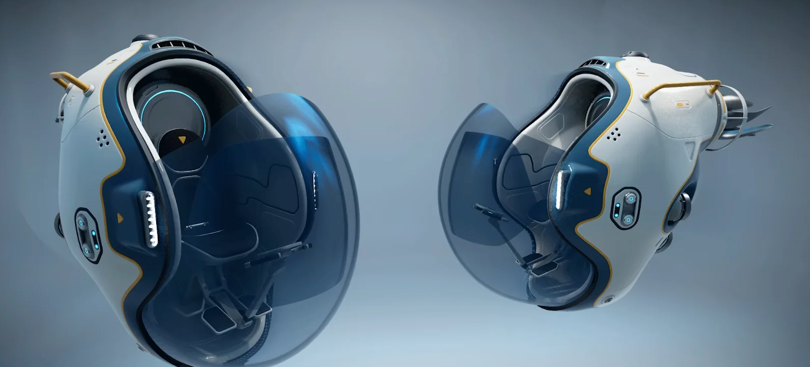

Tadpole
Scout VehicleYour first personal submarine. Compact and maneuverable, the Tadpole can enter narrow caves and tight spaces that larger vehicles can't access. Released from the core drone docking bay. Essential for reaching early POIs.
40 km/h
Max Speed
500m
Depth Limit
2
Seats (Co-op)
✅ Core Release Drones
✅ Narrow Cave Access
✅ Fast Response
⚠️ Limited Cargo
⚠️ No Life Support